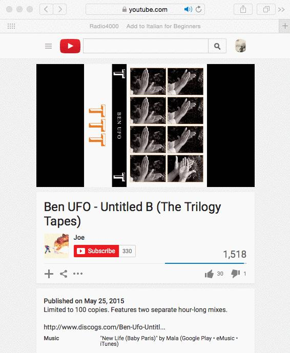

How to use the Radio4000 bookmarklet to add tracks faster in my radio?
How to use the Radio4000 bookmarklet to add tracks faster in my radio?Here is a solution that works for every one, on mac, pc, mobile, tablet or smartwatch (alright, possibly not that one), without having to install anything!Much simpler to explain it with gifs (above), but here is the text explanation:drag the bookmarklet to your browser’s favorite baropen a music you like on Youtube. Click the bookmarklet (you just added it in your browser’s favorite bar!)now that you have been redirected to your Radio on Radio4000, just click Add Track to add this music to your radio. Done!From now on, just repeat step 3 each time you want to add a music to your Radio4000.Note: in order for the bookmarklet to work, you need to be logged-in your Radio4000. If you are not, just log in the usual way and start again at step 3.

